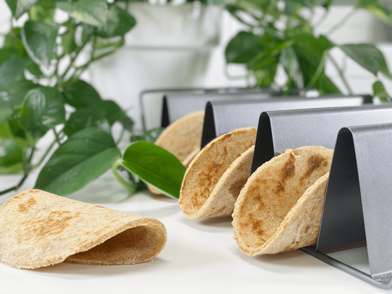
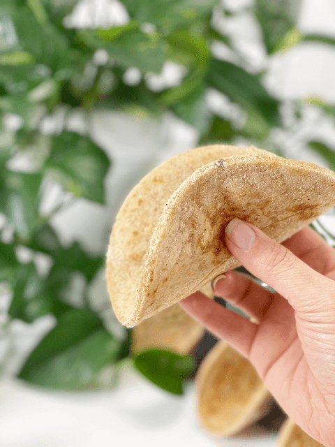
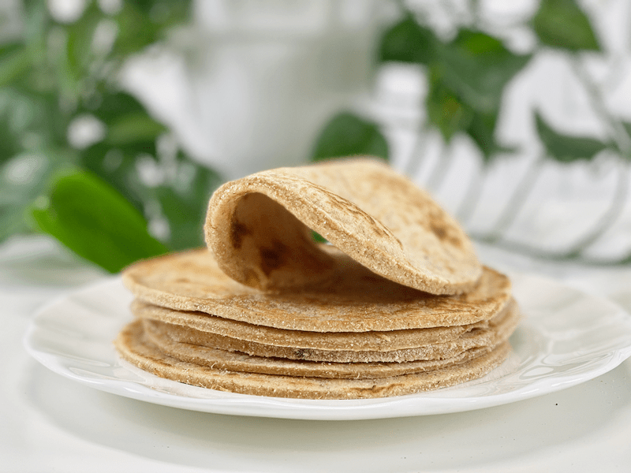
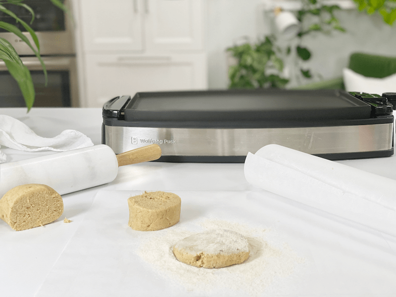
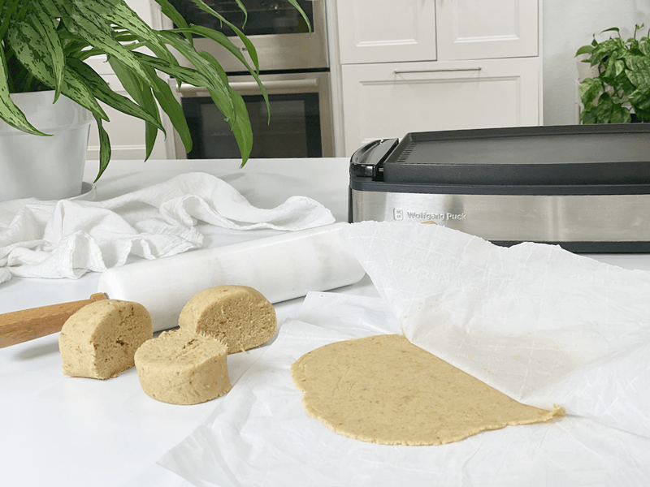
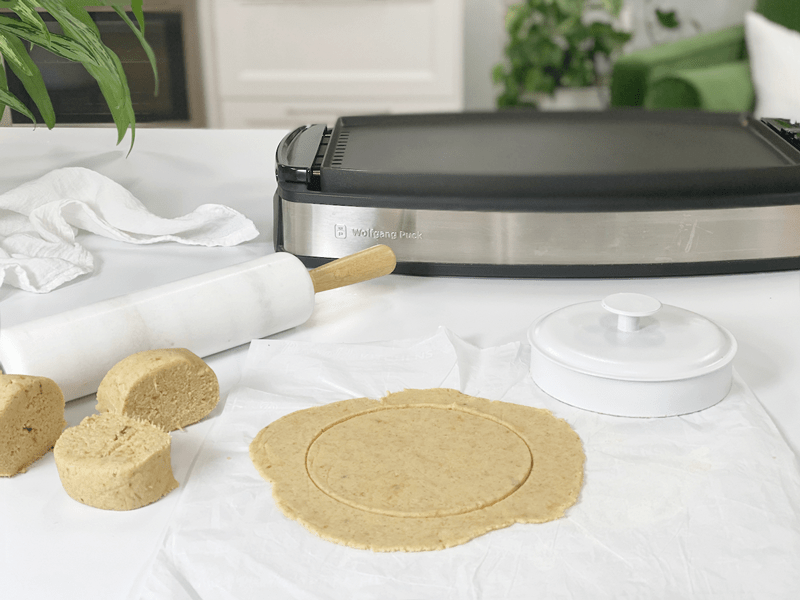
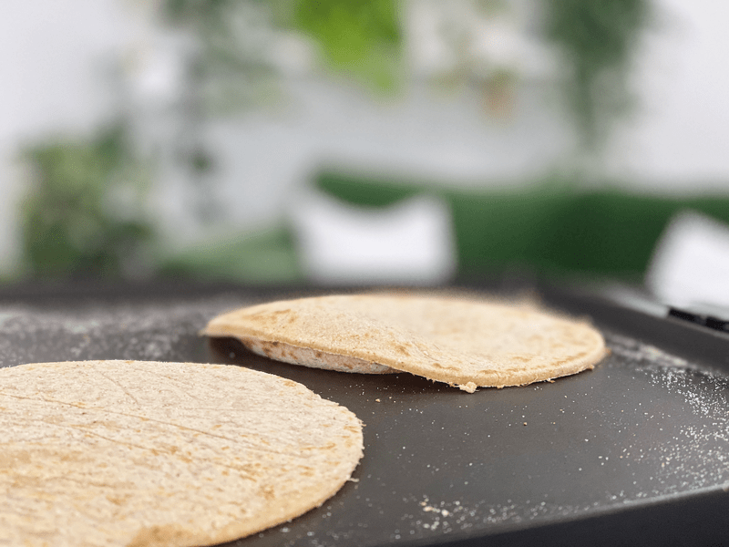

White Sweet Potato Wraps | Cooked | Made from Root Vegetable Flours | Oil-Free
Hold on to your knickers, because these wraps are FREE of gluten, wheat, dairy, eggs, nuts, seeds, soy, and grains. Oh, and no added sugar! I just read this sentence to Bob and in the voice of John Wayne he said, “Well, what the heck are they made of… pilgrim?” That man makes me giggle. But before I answer that, let me add that they are high fiber, low fat, high protein, and high in antioxidants and vitamin E. They are light and flexible, dense, and flavorful. AND believe it or not, even the flours used in this recipe are derived from root veggies!

Are you are familiar with lefsa? It is a traditional soft Norwegian flatbread that I grew up on. It is made with potatoes, flour, butter, and milk or cream. As a little girl when I watched my great-grandmother making lefsa, it was like watching a circus act. She would roll them almost paper-thin to a 14-16″ circle. She then gingerly transferred them to the lefsa cooking griddle with a thin stick, flipping them back and forth until cooked. When they were done cooking, they resembled flour tortillas but bigger and thinner.
As soon as one would be done cooking, she would drape one over a plate and hand it to me. From there, I would skip to the table, awkwardly cover it with butter, and with a heavy hand sprinkle cinnamon and sugar all over it (and the table too). It was our tradition to then roll it up into a tube and eat it.
I would then skip back to great-grandma, hop up on the stool with my cheesy freckle-faced grin, and with my legs swinging and pigtails bopping here and there, I would enjoy it, bite after bite. Of course, the experience wasn’t complete unless I had butter dripping on my legs (and floor). A taste of heaven! The point to this story was that for some reason, these sweet potato wraps reminded me of how those lefsa wraps tasted. While making these wraps, I was blessed to have these memories flood me with warmth. Okay, time to get our aprons on–we have some wraps to make!

Ingredient Run-Down
Sweet Potato Variety
- I used white sweet potatoes, which are my favorite. The white sweet potatoes aren’t as sweet as the orange variety, which makes them more versatile when it comes to pairing it with savory or sweet wrap fillings.
- When cooking the sweet potatoes, make sure that they cook evenly all the way through. For this recipe, the flesh of the sweet potato needs to be moist and very soft. I always batch cook sweet potatoes at the beginning of the week, so I used those. They had been baked in the oven and were about 5 days old.
- If you use any other type of sweet potato, be prepared for a slightly different color and taste.
Cassava Flour
- Cassava flour is made from the whole root, simply peeled, dried and ground, leaving it full of fiber.
- Cassava flour is considered a resistant starch, which positively benefits the health of the digestive tract, feeds good bacteria, and reduces inflammation and bloating while promoting good digestion.
- Cassava flour is very mild and neutral in flavor. It’s light and fine, not grainy or gritty in texture. Instead, it’s soft and powdery much like regular wheat flour.
Tigernut Flour
- Tigernuts are actually a small root vegetable that originated in Africa.
- Like cassava four, tigernut flour is also a resistant starch.
- Tigernut flour is light and has a slightly sweet and nutty flavor.
- You can more about it (here).
Psyllium Husk Powder
- Psyllium husk powder has cooking superpowers. Its excellent pliability, gluten-like-structure, and undetectable flavor/color make it a staple in my pantry.
- Due to its high fiber content, it’s often sold as a laxative, which can be good to know if you have a sensitive digestive system. In ratio to other ingredients, you don’t need to worry about these tortillas causing you to run to the bathroom.
- It is inexpensive and can be readily found in grocery stores. A little bit goes a long way!
- If you already have some on hand but it’s in full husk form, be sure to toss it in the grinder to create a fine flour texture.
- You can read more about it (here).

Tips and Techniques
Rolling the Wraps
- When rolling out the wraps, be sure to use even and steady pressure so that all sides and edges are even thickness, so it will cook evenly.
- Also, you will need extra tigernut flour to dust the dough while rolling it out so it doesn’t stick to the parchment paper.
- The uncooked wrap cannot be lifted from the parchment without falling apart, so it is important to press the dough out onto a piece of parchment paper. After removing the top sheet of parchment paper, flip the dough side onto the palm of your hand and gently peel away the other parchment sheet.
- Be patient when you make your first one! If some of the dough sticks to the parchment when you peel it off, simply scrap the dough up and start over.
Recipe Variations
- If you want an even more sweet wrap, thinking of dessert, add 1-2 tablespoons of maple syrup and some cinnamon.
- If you want a wrap that is more on the savory side, start by making sure that you use white sweet potatoes, then add some onion and garlic powder.
 Ingredients
Ingredients
Yields 10 (5.75″ diameter) + a small sampler for the chef
- 2 cups white sweet potato, baked or steamed
- 1/2 cup tigernut flour
- 1/2 cup cassava flour
- 1 Tbsp psyllium powder
- 1/2 tsp sea salt
Preparation
Create the Dough
- Start by either baking or steaming the sweet potatoes. Once they are cool enough to handle, remove the skins.
- In a medium-sized bowl combine the sweet potato, tigernut flour, cassava flour, psyllium, and salt. Mix together with your hands to create a workable dough.
- Preheat a non-stick pan or griddle to medium-high heat. I used a griddle so I could cook 4 at a time. I set the temperature to 350 degrees (F).
Create the Wrap Shapes (Two Methods):
- Freestyle Wraps
- Divide the dough into 10 equal-sized ball shapes. You will roll each ball out between two pieces of parchment paper.
- Flatten the ball into a disc shape with your hands and liberally dust each side with more tigernut flour (sprinkling some on the parchment paper as well).
- With the dough sandwiched between the two sheets of parchment paper, roll it out EVENLY to roughly 1/4″ thickness.
- Remove the top piece of parchment paper.
- Flip the dough side onto the palm of your hand and gently peel away the other parchment sheet. You won’t be able to lift the wrap off of the parchment paper.
- Form Shaped Wraps
- Leave the dough in the bowl; no need to divide it as done above. The size wrap you want will determine how much dough you will pinch off. Mine were 5.75″ diameter, so I used about 1/4 cup of dough. It doesn’t matter if you pinch off too much.
- Roll the dough into a ball, then flatten it into a disc shape with your hands and liberally dust each side with more tigernut flour (sprinkling some on the parchment paper as well).
- With the dough sandwiched between the two sheets of parchment paper, roll it out EVENLY to roughly 1/4″ thickness.
- Remove the top piece of parchment paper and press a circular shape into the dough. I used the lid to one of my canisters. With the cutter pressed into the dough, turn it back and forth to help loosen the excess dough from the template. Peel away the excess dough.
- Flip the dough side onto the palm of your hand and gently peel away the other parchment sheet. You won’t be able to lift the wrap off of the parchment paper.
Cooking the Wraps
- No need for oil if using a well-seasoned cast-iron pan, non-stick pan, or griddle.
- Place the wrap on the preheated pan and cook for 2-3 minutes, until the wrap starts to bubble slightly; then flip and cook an additional 2-3 minutes
- With your spatula, lift up the wrap and take a peek under it. Once brown spots develop, flip it over. I cooked them until they started to puff up in places. One out of the bunch didn’t puff up, so don’t use that as the only guide indicating that they are done cooking.
- Place the cooked wrap on a cooling rack while you proceed with the rest.
Storing the Wraps
- These wraps are delicious served warm right after cooking, but they are equally good later on.
- To store the wraps, make sure that they are fully cooled (or they will create condensation, which equals sogginess). Layer pieces of parchment paper between each wrap in an airtight container.
- They can be stored in the refrigerator for 5-6 days or in the freezer for 2-3 months.
- If frozen, allow them to come to room temperature.
- They can be reheated briefly on a warm skillet or enjoyed chilled or room temperature.
-

-
Use plenty of tigernut flour when rolling the dough out so it doesn’t stick.
-

-
Roll an even 1/4″ wrap between two sheets of parchment paper.
-

-
You can either stamp out a shape or cook as-is.
-

-
Flip when they start to puff while cooking.
-
-
Enjoy! I ate 1 1/2 right off the griddle. Shhh, that’s just between you and me.
© AmieSue.com